How to Livestream a (Technology Focused) Class
In BC times (Before Covid), I had often dreamed of setting up a semi-regular gathering with some nerd friends to make things. We'd all sit around, drink beer, eat trail mix, and bash things together with Arduinos and Raspberry Pis and servos and LEDs and what have you. And then March 2020 rolled around - getting together in person was suddenly passé, but with my day job sending us home for "three weeks" of shelter-at-home, I also had a lot more time on my hands...
And so, the Electronics Bash live video classes were born. Starting Sunday, March 15, I begin streaming live electronics classes every Sunday night. They have centered around Arduino programming and usage, but I've also branched off into electrical theory, battery types, microcontroller hardware, and other related topics. After 20 weeks of that, I shifted gears to Raspberry Pi programming and single board computers. Many of the topics have been suggested by the small but enthusiastic core group of nerds who come together on Sunday nights to share ideas and learn things.
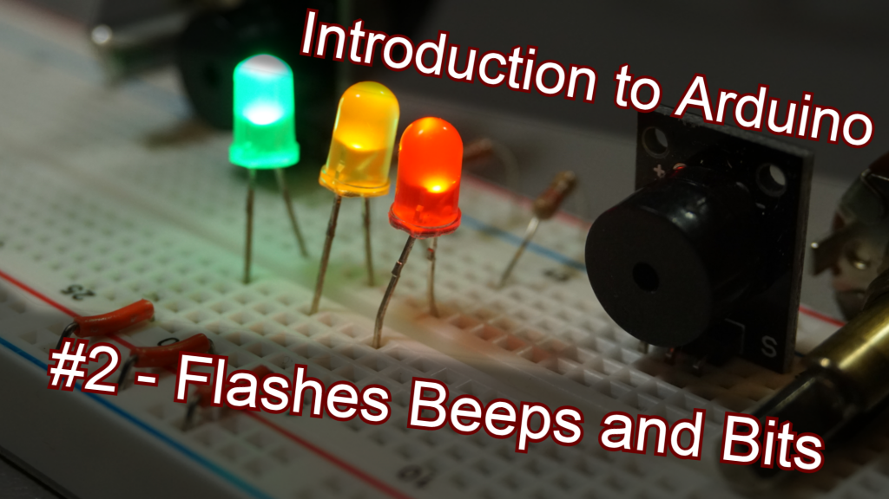
It's now late-August 2020, I've taught 22 of these classes, I'm back at my day job, and having "completed" the Arduino course, it feels like I've created "one whole thing" . And so I thought it might be a fun time to look back at what I've learned about online teaching, streaming setups, electronics, and life over the first 22 Electronics Bash classes.
Some of this is going to be technical, some philosophical, some nonsensical. But what else is new.
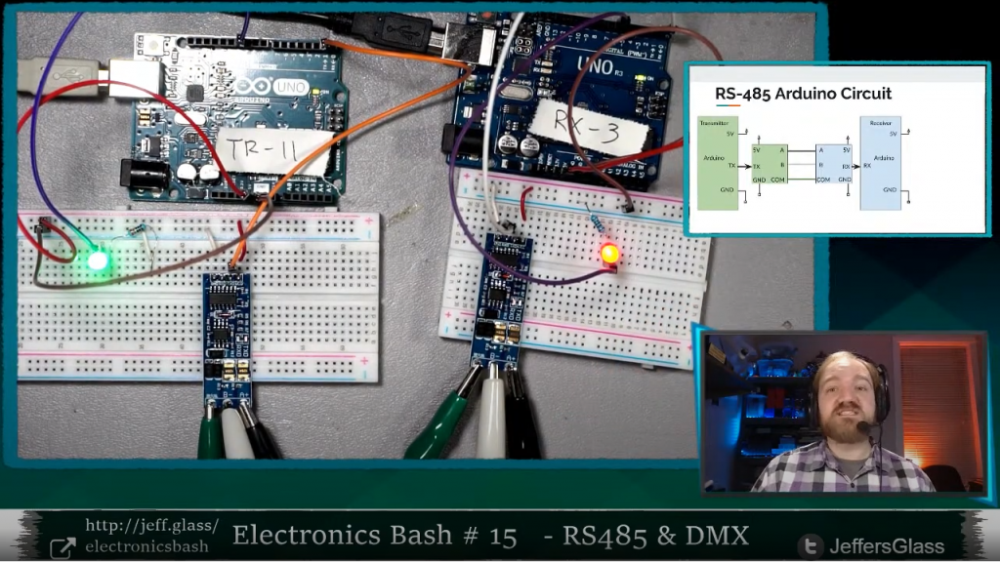
The stream looks pretty good these days, I like to think.
Technology
My technology setup has been relatively consistent since about week 4 of Electronics Bash, with a few adjustments along the way as noted below. Let's break it down by technology categories.
(My setup in many areas changed significantly with the shift to Raspberry Pi classes, so all those changes are noted at the end of this section.)
Goals
When I leapt into the idea of teaching these classes, the thought was to focus on "Arduino, Electronics, and Related Stuff." I knew I would need at least two things to be visible: a computer desktop (for the programming IDE and explanatory slides) and the workbench itself (for showing wiring and physical demos). Seeing my face I'd count as a bonus. I also wanted to stream in reasonably high resolution - 720p as a goal, 1080p would be nice - and to make the process of switching between what the viewer is seeing as seamless as possible. Most topics would involve a good amount of swapping back and forth between slides, code, the workbench, and verbal explanation. And it should all look reasonably clear and clean.
The setup that I came up with has served me well in these regards over time, and wasn't terribly complicated nor expensive to put together.
Computer
I use my Lenovo Legion Y7000 laptop for basically all my computer purposes these days, including streaming and programming. It's a "gaming laptop", which essentially means it has a mid-tier GPU stuffed inside a laptop chassis with some extra fans. I personally like the versatility this gives me - I can run Fusion360 or AutoCAD pretty well, rendering a video out from Da Vinci Resolve is pretty efficient, and my setup is still portable.

I have an external monitor more or less permanently behind my workbench to accommodate the streaming setup - it's a basic 1600x900 monitor that I picked up from FreeGeek Chicago at some point, just fed from the HDMI output on my laptop.
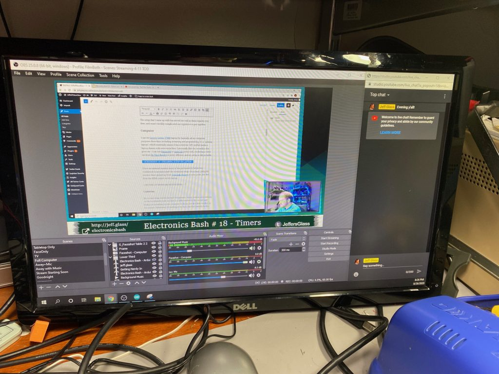
Cameras
My stream setup centers around two primary views- looking at something on the workbench (with my face in a little window in the corner) and looking at something on the computer (with my face in a little window in the corner). Sometimes, it's looking at my face alone, but that's mostly for the beginning and end of the class, and any long explanations in the middle. The full list of stream looks is below, but these are the big two/three.
To achieve these core looks, I have three cameras: two Logitech c920 HD webcams as the face-cameras, and a Sony a5100 mirrorless camera feeding an Elgato CamLink 4k HDMI capture dongle pointing straight down at the workbench.
The c920s are both mounted on 3D-printed reposition-able arms, which mount to some 2020 aluminum extrusion that clips onto the front of my workbench shelves. They're really decent face cameras, with a wide field-of-view and decent autofocus. It's a shame that the Logitech drivers don't like to save their settings very well, so I end up needing to reconfigure things like color temperature and gain every time I restart my streaming software. But that's only an annoyance.
You can see both ducting tape (NOT duct tape) and Black Tack in the pictures below, used as barn-doors to shield the cameras from the nearby lights to avoid flare. I have one for when I'm working at the workbench and another for when I'm looking at the laptop screen.
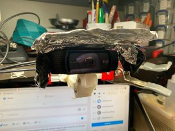
The a5100 is usually attached to an 11" magic arm with a soft-clamp on a higher shelf; I also have a desktop boom-arm for filming things up-close, but I almost never stream that way. I originally had a cheaper, plastic-y 11" magic arm, in the theory that I wasn't sure if it would actually be useful. Turns out they're a great tool, but the cheapiest ones wear out pretty quick - the metal ones like the one linked above are worth the investment.
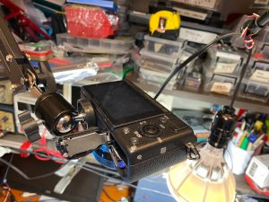
I use the kit OSS 18-55mm lens that the A5100 came with - with "digital true zoom" providing another 2x magnification beyond the longest zoom range, I find I get a really good range of full-desk to close-up-on-table. A battery-replacer (wall-wart-to-battery-form-
Software
I use Open Broadcast System (OBS) as my primary streaming software. I find it does most everything I want it to, and a couple other things besides. Since I'm not monetizing my streams at all, and don't need features like pop-up notifications when somebody throws me some digi-chits or something, I don't feel the need to switch to something like Streamlabs or Stream Elements. But perhaps someday I should play with them.
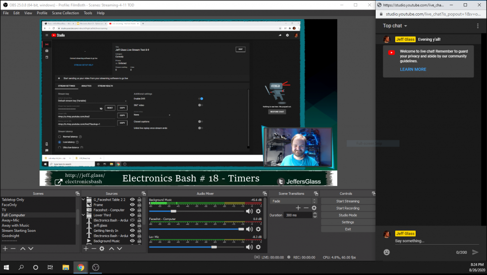
As I mentioned above, my big 3 scenes are: Computer Screen (+ small face), Workbench (with small face), and Face (With small computer screen and workbench). But I have 13 different scenes in my active collection; for the sake of completeness, they are:
- Just facecam
- Facecam with small workbench and laptop views
- Just workbench
- Workbench with small facecam
- Workbench with small facecam and laptop views
- Just laptop screen
- Laptop with small facecam
- Laptop screen with small facecam and workbench views
- Raspberry Pi Display with small facecam
- "Video Adjustments in Progress" slide with microphone ON - I use this mostly when I need to stand up from my workbench to grab something on the shelves behind it, and I don't want viewers to be staring at my tummy
- "We'll Be Right Back" slide with Microphone OFF and music on - For times I actually need to step away for a moment
- "Stream Starting Soon" slide with countdown to start
- "Goodnight" slide - for end of streams
Switching between the various views smoothly on the fly as necessary to explain a concept is, I think, critical to maintaining flow. For that, I use the Stream Deck Mobile app for my iPhone, which emulates a Stream Deck controller. The Stream Deck configuration app is easy to use if just a little bit buggy - it allows me to have up to 15 buttons on my phone which switch between scenes in OBS on the fly.
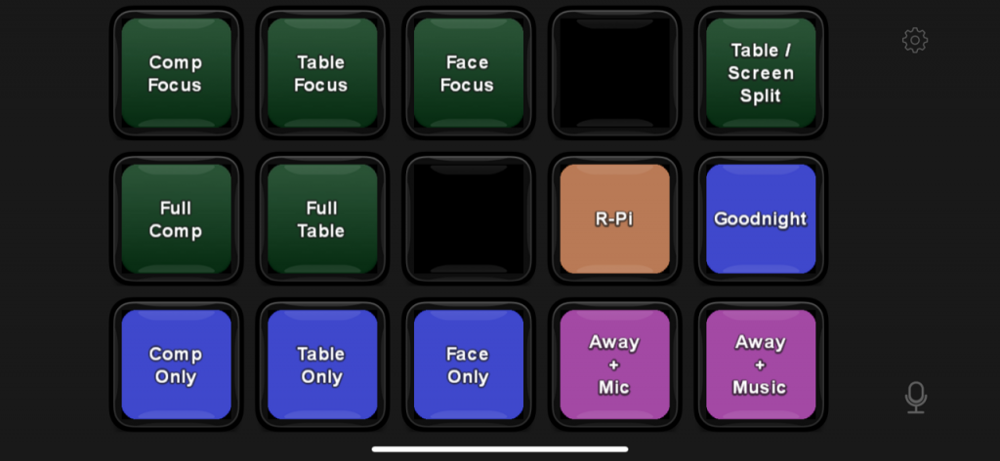
My Streamdeck App configuration
To do the "Starting Soon" and "waiting for stragglers to arrive" countdowns, I use a little script called My Stream Timer, which updates a .txt file with the current countdown time and specified by some very basic controls. OBS then uses this text file as the source for some text that appears on the screen.
Lighting
I spent more than a decade as a stage lighting professional before shifting gears into my current job. As such, I have opinions about lighting. Of all the physical elements of my setup, this is the one that's changed most over time. But thankfully, it doesn't take a ton of cash to make a halfway decent lighting environment, particularly when you're in charge of your own camera angles.
One good rule of thumb for video that's meant to be clear and communicative - get a lot of light on your subject, and get light off of whatever's behind your subject. In my case, I have an 11W 6500K LED bulb strung above my workbench as the primary bench light, as well as a small LED A-lamp fixture that used to be in a bedroom as some fill light. These just blast the bench with light, and allow me to turn the ISO on my camera down to keep the grain away.
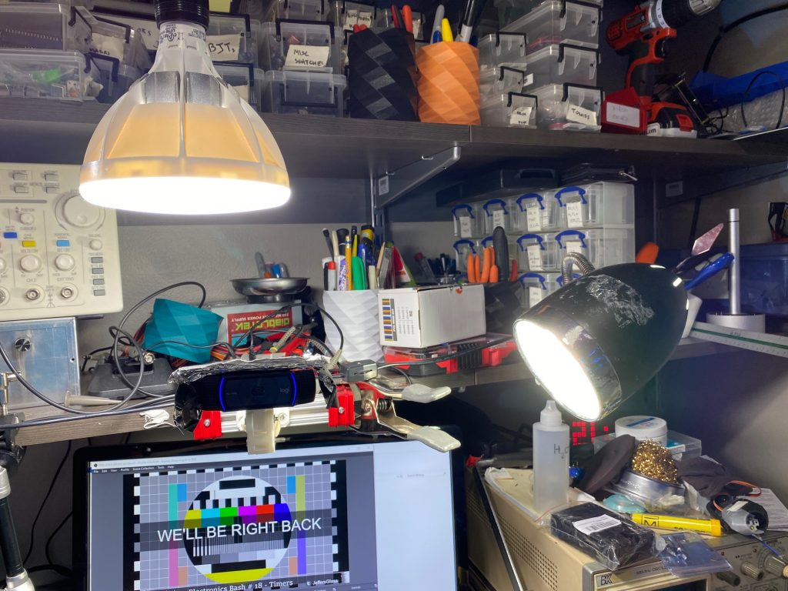
On my face, I have a small LED gooseneck that was on an alternate workbench in my last apartment. Hanging above my chair is a clip light with another cool-while LED acting as a hair light. Finally, down near my left knee is a small clip light with a blue LED bulb, which acts as a fill light when I turn 45 degrees to look at my laptop screen.
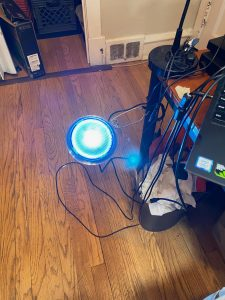
The background behind your subject doesn't need to be totally dark, though relative darkness does help with contrast. Creating color contrast can help draw a figure out from the background as well. To that end, I have some RGB LED tape (with only blue and green hardwired on) on my storage shelves that sit behind me on camera, and a red LED PAR bulb that scrapes up my blinds for some additional color and texture. Just provides a little additional pop and saturation to the scene.
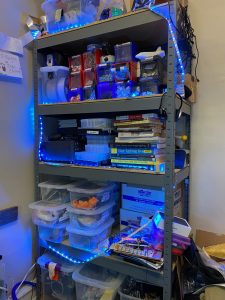
All together this adds up to what I feel is a balanced lighting look, that keeps my face visible and clear, illuminates the desktop, and hopefully doesn't look too cheesy.
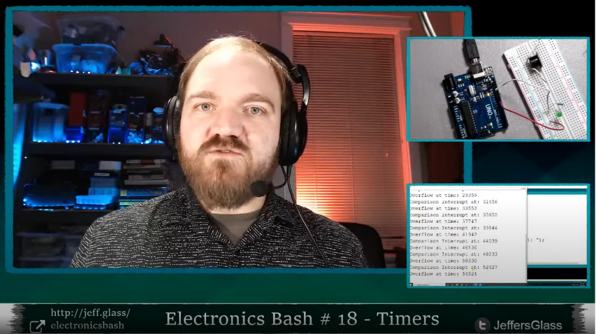
Audio
For the first 16 weeks or so of classes, my microphone setup was incredibly inexpensive - a wired BOYA lavalier from Amazon and a generic USB Audio Interface that a picked up when I was experimenting with Audio input to the Raspberry Pi a few years back. I like the BOYA a lot for the price - decent response, nice long cable, fairly durable. More decently, I've been used a Fifine wireless boom-style microphone, which gives me a little more freedom to move around, but the low-frequency response isn't nearly as good.
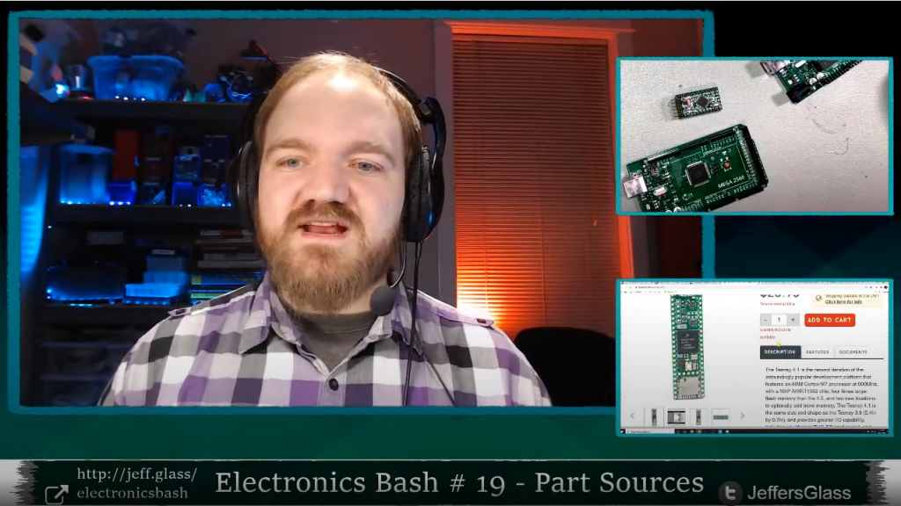
I'm not in love with the look of the boom mic, but it does its job.
To make things sound just a little rounder, use a couple of OBS's built-in VST audio plugins - EQ and Compressor - to keep the frequency response pleasant and the volume to a reasonable level.
I used an inexpensive pair of over-the-ear headphones to hear myself and any notification sounds that come up. They're pretty darn good for headphones that cost less than $20.
I enjoy having a little background music on my stream, just to fill air and make things a little more cozy. All of it is pulled from YouTube's music library, which guarantees I won't be hit with an obscure copyright strike someday.
Raspberry Pi Class Adjustments
When I start the Raspberry Pi classes, I'm wanted to capture the HDMI output directly from the Pi into the capture software as well, so I went ahead and picked up one of the $20 HDMI capture dongles that have popped up from overseas in the past couple months. The thing works really amazingly well for how inexpensive it is - decent color, framerate, resolution, HDCP support... I've had no issues with it so far, and at least on my system the automatically-installed drivers work just fine. There does seem to be about 200ms of lag going into OBS, but for desktop instruction this is just fine. If you were using it to capture the output of an external camera, it might be necessary to delay your audio to match.
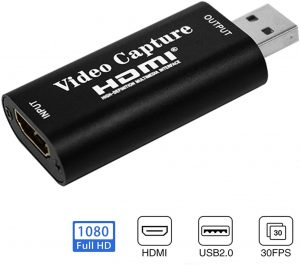
It could not look any more generic, but it actually works pretty well.
For my very first RPi class, I interacted with the Pi via OBS - that is, my view of the Raspberry Pi's desktop was inside of my streaming output inside of OBS. This wasn't ideal. The display is, of course, somewhat shrunk down; worse, the slight lag made the interface feel very floaty and hard to use. By the next class, I had dropped an HDMI splitter in between the Pi and the capture card, whose second output feeds a second external monitor. So now I have my laptop screen (where slides/IDE live), my streaming screen (HDMI output from laptop, where OBS/chat lives) and a Raspberry Pi screen (showing Pi desktop). This works really quite well as an interface.
Sometime I had discovered during my initial setup about USB video sources and USB hubs has also popped up again with this setup. I won't claim to fully understand the issue, but something about the way USB 2.0/3.0 handle video streaming resources is less than ideal. The result is that putting multiple video devices (webcams, capture cards) into the same USB port on a computer (via a hub) doesn't necessarily allow them to utilize all the available bandwidth, so having multiple video devices on one hub can be a problem. This blog post by Yokim encapsulates the same experiences I had.
My workaround for this is to have two of the video sources on the same hub, and then only ever activate one of them at a time. The two I chose are the webcam which shows my face when I'm looking at my laptop, and the cheapie capture card bringing in the Raspberry Pi desktop. These are the two feeds I think I'm least likely to ever need at the same time.
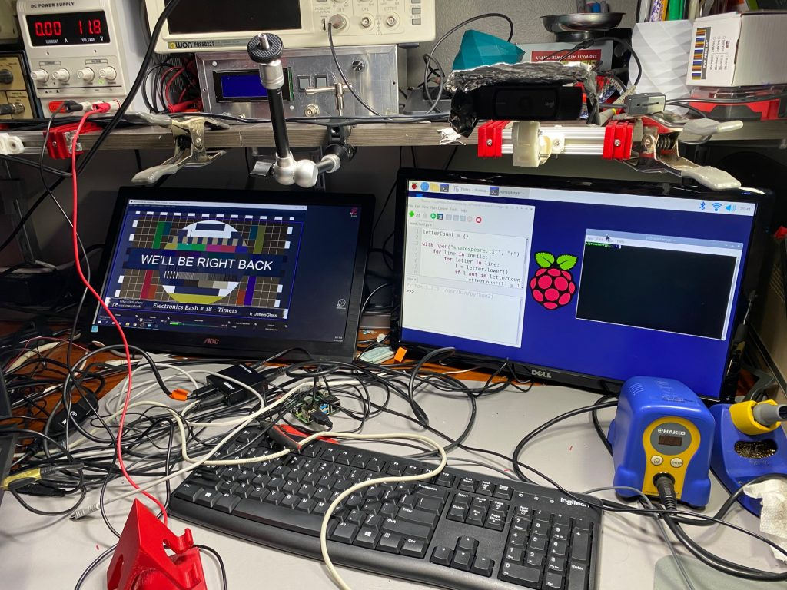 I had to take both monitors off their OEM stands to fit them under the lowest shelf in my workspace. Currently fitting them with 3D-printed stands.
Teaching: In Person vs. Streaming vs. Zooming
There was a time in my life that I thought I was going to be a school teacher. All of my summer jobs in high-school involved teaching a theater camp for kids and teens. Many of my college classes focused on "teaching artist" work, theater for young audiences, and pedagogical theory. I even accidentally ended up in a "How to Teach High School English" class in college that was meant for M.S.Ed. students, and stuck it out because it was so fascinating. And while that's not ultimately the direction my career has lead me at the moment, I've always had an interest in teaching skills and sharing knowledge.
There's been a real learning curve to teaching a course online though. And in my case, teaching it via stream, which I think is worth distinguishing from teaching via Zoom (or one of its thousand clones), which I'll shorten to 'Zooming.' When one is Zooming, whether with friends or students, there's still a modicum of feedback, even when no ones saying something. You can see faces. You can see confusion or comprehension. You can roughly gather whether a class is engaged or lost or checked out or eager for what's next. It's a poor substitute for in-person lessons, I think, but at least there's still some faces in the digital crowd.
In a streaming setup like I use, none of that is guaranteed. I spend a good chunk of my classes essentially talking to myself, and assuming it's being absorbed on the other side of the internet. Which is not to say the participants are unresponsive - they're wonderfully good about asking questions, poking fun, chiming in, giving suggestions. But especially for more complex topics, it's difficult to not be able to look into somebody's eyes every 30 seconds and make sure they're following along.
Classes 16, 17, and 18 on Interrupts and Timers are a great example of these challenges. These topics are super interesting (I think), but they're fairly dense. You need to understand a little bit about program flow, a little bit about memory, a little bit about hardware, and a little bit about timing to understand them. All of which we covered. But it's the kind of thing where one wants to ask "Does that make sense? Are we all following?" after each tidbit... and that's just not practical or actionable in a streaming environment. Especially with 6-10 seconds of lag between question and response.
Dealing with Errors: Doing it live
In teaching over 60 hours of live classes at this point, some errors were inevitable. Especially in an electronics course where I think it's valuable to build up the circuits, code, and understanding in real time. No matter how much I prep, experiment, and try to plan, there is inevitably going to be something that goes wrong. Such is life.
The challenge, then, is what to do when something fails? I personally find it throws me very much off my game - but I've consistently gotten feedback that the process of working through problems on camera is actually super useful to those watching.
I've wondered as part of these classes if a whole stream on just "Troubleshooting" would be valuable, but I think the more useful version of that is to make an earnest effort to solve the real issues as they come up. Of course, spending 20 minutes tracking down typos would suck. Those are the times I pull out a cake-I-baked-earlier version of the code. But most errors can be fixed quickly, and talking out how to find them - "Oh, this error message usually means..." "Oh, this behavior is wrong because..." is valuable to those learning to code and wire.
Lesson Development
Anyone who's ever built a course from scratch (and I know that's what a lot of traditionally-in-person instructors are doing these days!) knows how time consuming it is. First to make sure you fully understand the topic for a given lesson. Then to synthesize that knowledge into a logical sequence of explanations, topics, and themes. And finally to reify those ideas into tangible explanations and demos. Especially with a sweeping topic like Fundamentals of Electricity- where do you even start?
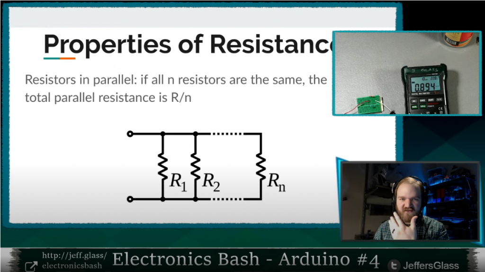
This did end up being a really fun week.
Especially since I was making these classes up as I went along, week to week, my process typically looked something like this:
- Previous Saturday - identify a potential theme for the following week's lesson; ruminate, ponder while finalizing the current week's lesson
- Sunday is stream-day - focus on the day's lesson. Possibly announce the next week's lesson if feeling very confident
- Monday/Tuesday - Do broad research, identify gaps in current knowledge ('wait I didn't know that was a thing'), form idea of scope of topic
- Wednesday - Start prepping slides with specific research, rearranging and re-shaping the lesson order as they form. Announce stream on Facebook/YouTube
- Thursday/Friday - Finalize slides while starting to build demo circuits, programs.
- Saturday - Finish building demo circuits, test that they can be built in real time for stream. Start pondering the following week...
- Sunday - STREAM IT!
Taking Breaks and 'Bye' Days
Writing a new 2-3 hour class every week and teaching it online would be exhausting enough, especially for someone a little rusty with teaching. Doing it in the throws of a Pandemic was... well, let's just say a lot.
I really wanted to keep to the every-single-week schedule as much as I could, both for continuity of those watching and frankly to maintain some structure for myself as the world changed. To that end, I did 20 straight streams from March through the end of July, every single Sunday (well, 1 Monday). Which I felt great about, but I did need to find ways to give myself little breaks in there.
The outlet I came up with was taking what I thought of as 'bye weeks;' like when a team is doing so well in a sports tournament that they're just "assumed to have won" they're week and advance automatically. I did this by selecting topics that I either knew well enough to be able to teach with minimal preparation, or that I had already taught for some other purpose.
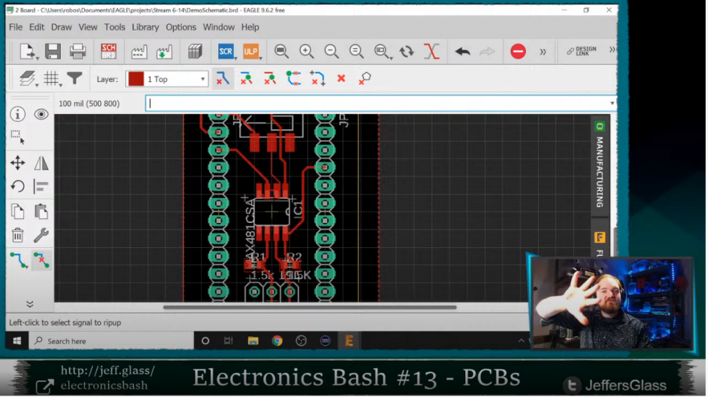
The two weeks that exemplified this were Week 10: Write Better Code and Week 13: Creating a Printed Circuit Board. The former was essentially refactoring existing code in an IDE, a straightforward thing to do live. The latter was based on a lesson I had actually given at my previous job to some employees and interns. Both provided a little brain space in weeks where I was otherwise swamped.
Now that I'm back to work at my fulltime job, I've elected to go to an every-other-weekend schedule, which gives me a lot more breathing room in terms of ruminating, absorbing, and developing the upcoming lessons. And I think the lessons themselves are turning out better for it. Slamming a lesson together in a week on top of a 40-hour-a-week job would lead to some substandard teaching, no doubt.
Conclusion
I don't think there's any better way to illuminate the holes in your knowledge of a topic than to try to teach that topic. Once you have to verbalize/write down/illustrate/demo a subject to someone who's never touched it before, you discover exactly what you've always glossed over. What does happen in that edge case? What situations would cause this specific thing to happen? Why this and not that?
Though I wouldn't have wished for the current state of the world, I'm grateful to have spent so many Sundays in the last five-and-a-half months with other nerds, teaching, learning, and exploring. I hope we can do the same over beer and trail mix real soon.
Many of the above links are Amazon Affiliate links; they are also all products I use in my everyday work and think are decent and worth the money.